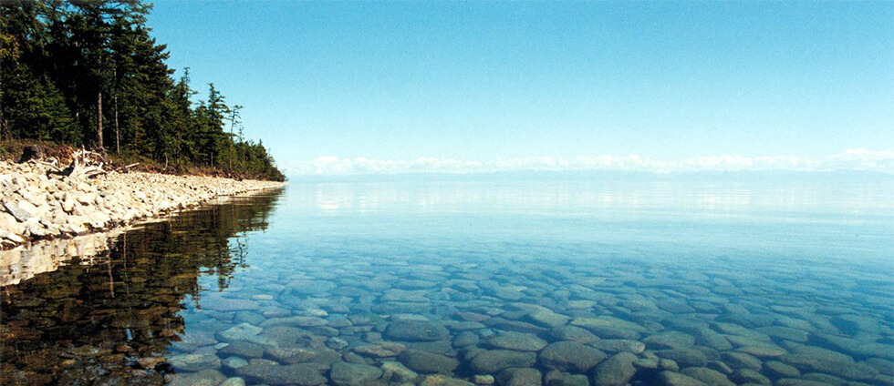

Статья
Я сознательно не упоминаю про обсуждение как лучше и проще идентифицировать агента (Роман спросил можно ли по IMEI телефона, например, идентифицировать), о пожелании, чтоб даже при условии плохой связи можно было сформировать заказ, а как связь «появится», то отправлять заказ и ряд других моментов, которые могут в значительно степени повлиять на стоимость проекта.
На днях я договорился встретиться с одним моим знакомым на предмет обсуждения его идеи web-сайта. Руслан — успешный бизнесмен и бизнес его естественно не связан с интернетом. Сразу скажу, я не иронизирую случившуюся ситуацию, более того, я согласовал с Русланом, что основываясь на нашем с ним разговоре, постараюсь написать небольшую статью.
Итак, вот первоначальная постановка его задачи — т.е. то, как была озвучена бизнес-модель: «Александр, мне нужна страничка на моем сайте или где-то в интернете, на которой человек сможет заполнять форму и те данные, которые он занес должны отправляться на наш e-mail. При этом должны передаваться контактные данные этого пользователя».
Мне представляется, что даже этого сокращенного диалога достаточно, чтобы увидеть как «простая страница с возможностью заполнить форму и отправить на e-mail» за полчаса обсуждения благополучно выросла до проекта, где есть система заказов, есть личный кабинет агента с историей его заказов и, возможно, с финансовыми показателями, есть личный кабинет оператора, где он видит заказы агентов и может при необходимости их редактировать и устанавливать статусы. В общем, получился полноценный такой бизнес-инструмент.
Мне представляется, что даже этого сокращенного диалога достаточно, чтобы увидеть как «простая страница с возможностью заполнить форму и отправить на e-mail» за полчаса обсуждения благополучно выросла до проекта, где есть система заказов, есть личный кабинет агента с историей его заказов и, возможно, с финансовыми показателями, есть личный кабинет оператора, где он видит заказы агентов и может при необходимости их редактировать и устанавливать статусы. В общем, получился полноценный такой бизнес-инструмент.
Я не хочу сказать, что именно так и в полном объеме надо разрабатывать этот сайт. Это решать заказчику. Он сам может определить экономическую целесообразность или нецелесообразность инвестировать в такой проект. Я лишь хотел на реальном кейсе показать, что ответить сходу на вопрос «сколько будет стоить стандартный сайт» невозможно. Точнее если вы услышите цифру, скорее всего она будет ничем не обоснована.
Теперь же, когда работа Уилла с игрой Alien: Isolation была завершена, что несомненно удачно совпало с ходом разработки NPC, он собирается приступить к работе над диалогами NPC. Мечта разработчиков: создание бесконечных, процедурно-генерируемых сюжетных линий аля Walking Dead. То есть то что мы видели в небезизвестной игре, этот потрясающий до глубины души сюжет заставляющий сопереживать героям как никакой другой, в игре, по надеждам разработчиков, мы будем видеть постоянно.
В общем-то мечты мечтами, но до них еще нужно добраться. Однако у разработчиков уже есть нечто захватывающее и интересное, что ждет не дождется чтобы выйти на свет и показать себя во всей красе.
Возвращаясь к теме, Уилл сейчас работает над новыми канонами мира PZ а также проработкой предыстории, радиопередач, и всего другого что может нам рассказать о том как все началось. Возможно даже, что, по ходу игры, можно будет наконец разгадать загадку того, как начался весь этот кошмар.
Недавно разработчики встретили старого друга, которого Бинки и Лемми знали еще со времен былой коммерческой промышленности (когда еще не являлись разработчиками Project Zomboid). И так, случайно сложилось, что он стал аниматором! Что это значит? Это означает, что в сентябре,в свободное от работы время, он будет помогать команде Indie Stone с анимацией в игре в течении нескольких месяцев. Пусть Бинки и владеет некоторыми навыками в этом направлении, но всегда говорил о том что его навыки никак не идут в сравнении с теми коими владеет профессиональный 3D аниматор.